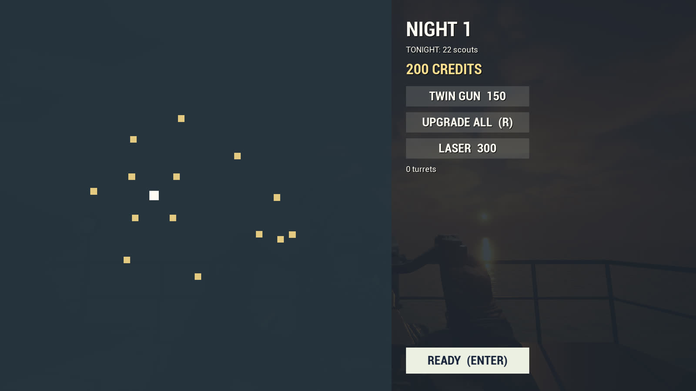
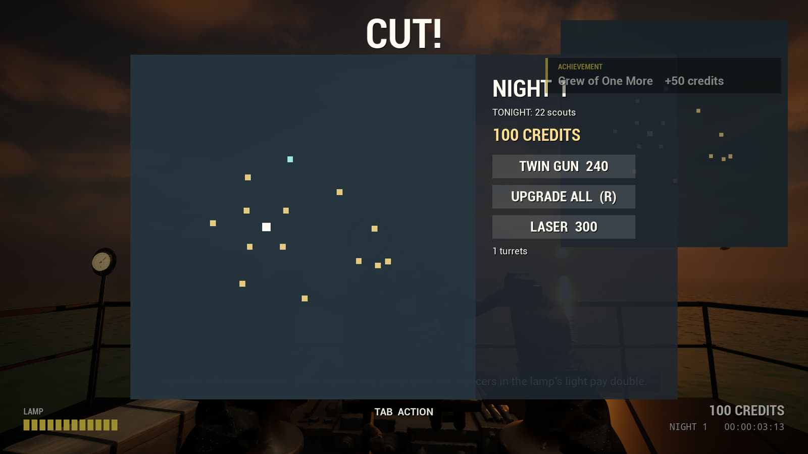
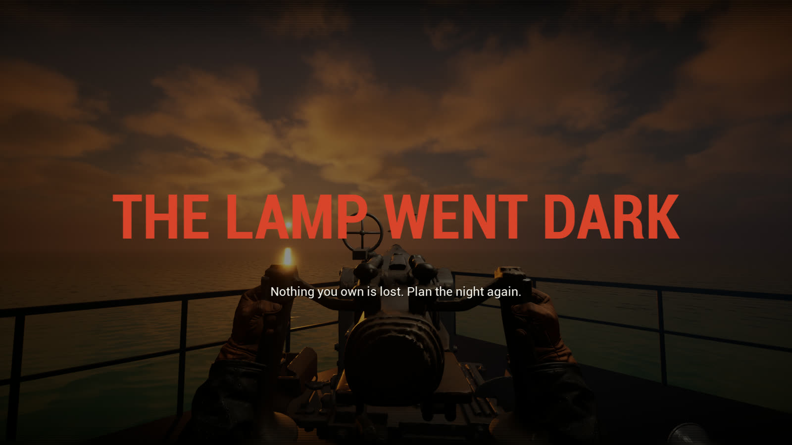
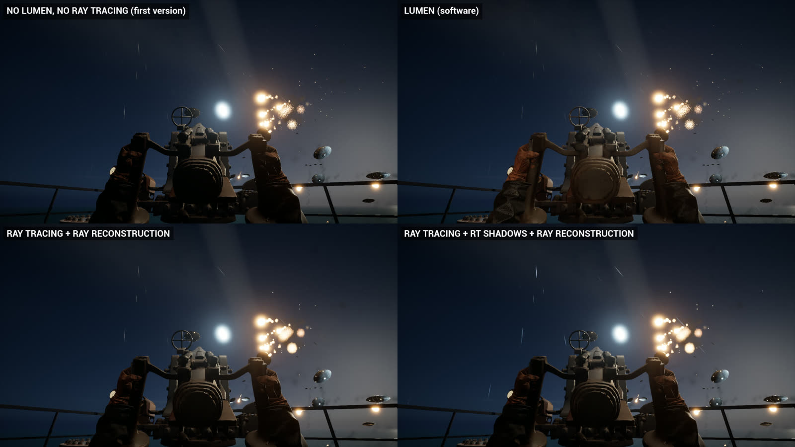

Day 2 Friday 13 November
The skeleton runs: hut, walk, night, held, hut; and the first honest look at ray tracing
4 pictures 1 failure 4 min read
Checkpoint The seams are in; the lanes start
While the plan in the last entry was being written down, the integrator was writing the first code of the rebuild. It is in now, and the other lanes start from it.
The seams, and a loop a bot can play
At 13:29 the integrator committed the seams: the shared parts every lane builds against. 35 files, about 1,800 new lines: the two new phases of a night (the hut and the walk) added to the director, the one-second "NIGHT 1" card, the tablet that pauses the world, buying and placing a turret from the plan, the three stations of the lighthouse, and a painter for the map that the PC, the tablet and the live map will all share. Each lane's part is a stub that does the simplest correct thing, so the loop runs from the first minute and each lane fills in its own piece.
Proof is a run, not a review: the bot played three nights in a row, from the hut through READY, the walk, the night card and the fight, to "held" and back to the hut. It opened the tablet in the middle of a night and closed it again. It lost a night on purpose and came back to the hut on TAKE 2 with exactly the credits and turrets it had at READY.
None of what follows is what a player will see. These are the stand-ins the lanes now replace.






Latency had never been measured
The developer asked for low latency, and the game has NVIDIA Reflex. But every run of the first version had logged its latency as -1: not a measurement. The render lane found why. The engine's Reflex plugin registers two latency-marker modules, one that reads the driver's frame reports and one that only streams events for outside tools and always reads zero, and the game had switched on only the second. Both are on now, and the game can show a small latency panel.
The first reading, in a 1280 by 720 window with the bot at the gun and Reflex on with Boost: 8.2 ms from input to picture (6.2 ms in the game's own work, 3.1 in rendering), at 231 frames a second. The target is 20 ms or less in a full storm at 1440p; the full measurement comes from a run with nothing else on the card.
Ray tracing against the first version's look
The first version used neither Lumen (the engine's global illumination) nor hardware ray tracing. The design's rule: they are switched on by default only if they are clearly better. The render lane wrote a small tour that stops the bot's night with 30 saucers in front of the gun, then takes the same frame in each lighting mode and times it with nothing else running.


| Card time per frame, 1440p, DLSS Quality | first version | Lumen (software) | ray tracing + Ray Reconstruction | ray tracing + its shadows + Ray Reconstruction |
|---|---|---|---|---|
| at the gun | 3.19 ms | 4.10 ms | 5.09 ms | 4.74 ms |
| the rock | 3.31 ms | 3.70 ms | 4.87 ms | 4.66 ms |
| a saucer | 3.74 ms | 4.23 ms | 5.40 ms | 5.31 ms |
The verdicts, from the pictures:
- Software Lumen brightens the gun and the gloves and puts a speckled pattern on the left sleeve. That is a visual bug, so it stays off.
- Ray-traced shadows put black blotches on the tower and on the saucers' hulls: the high-detail meshes shadow themselves through the simpler stand-in meshes the ray tracer uses. They are never a default.
- Ray tracing with NVIDIA DLSS Ray Reconstruction is clean and costs 1.2 to 1.9 ms a frame. On this dark, dry frame it looks very close to the first version, so it has not yet earned its place. It gets its chance in the wet: the storm's rain and wet surfaces are being added, and wet metal and water are where reflections show.
Every mode is far inside the card's budget (8 ms at 1440p). What limits the frame rate today is the engine's render thread, not the graphics card: 122 to 200 frames a second at 1440p.
Next
Five more lanes started at 13:30 from the seams: the hut and the walk, the map and the plan, the stations, the tablet and the guide, the battle and the economy. The first playable loop is for the developer at about 19:00.